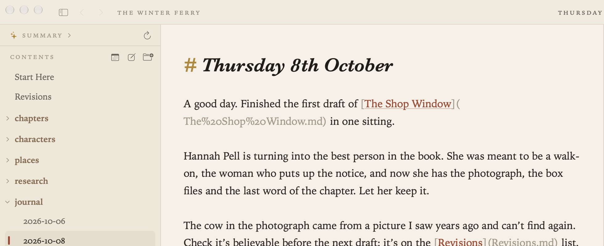
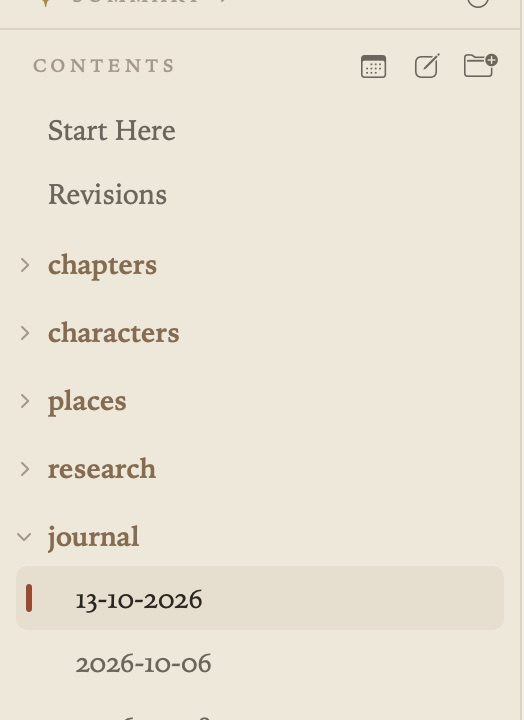
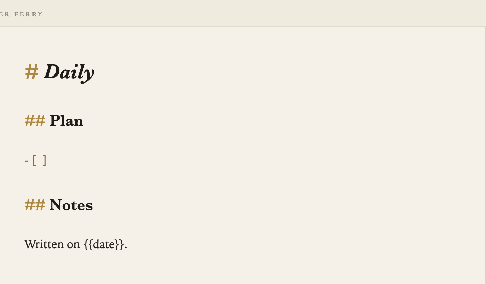
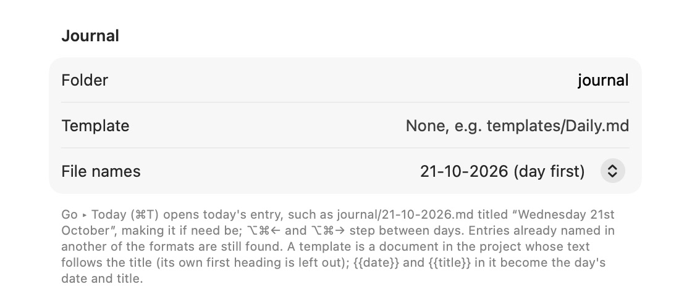
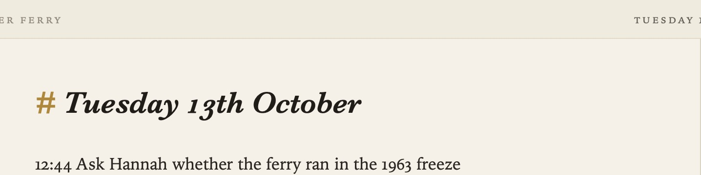

Journal
A journal entry is a place to write without deciding where: what you did, what you read, what you’re thinking about. Grasmere keeps one document for each day, in a folder of their own.
Today’s entry (⌘T)
Go ▸ Today (⌘T), or the calendar button above the contents, opens today’s entry, making it if it isn’t there yet. It’s called something like journal/2026-10-11.md and titled like a diary: “Sunday 11th October”.

An entry that’s already there is never written over, so ⌘T is always safe to press.
Stepping between days
Go ▸ Previous Day (⌥⌘←) and Next Day (⌥⌘→) step between the days that have entries, skipping the days that don’t. From a journal entry, they step through the folder that document is in. From any other document, they start from today in the journal folder.

Templates
A template is an ordinary document in your project whose text starts each new day’s entry. Give its path in Settings ▸ General ▸ Journal ▸ Template, such as templates/Daily.md.

- The template’s own first heading is left out; the new entry gets the day’s title instead.
{{date}}becomes the day’s date, as2026-10-11, and{{title}}the day’s title.- Links in the template are adjusted so they still work from the journal folder.
For example, a template like this:
## Plan
- [ ]
## Notes
Written on {{date}}.
File names and titles
In Settings ▸ General ▸ Journal:

- Folder sets where journal entries go (
journalby default). - File names chooses how new entries are named:
2026-10-11(year first, the default, which sorts by date everywhere),11-10-2026(day first) or10-11-2026(month first). Day first and month first are there for journals brought from another app.
Grasmere finds a day’s entry under any of the three names, so changing the setting never makes a second entry for the same day.
Settings ▸ General ▸ Date order (Automatic, Day first, Month first or Year first) sets how the titles of new journal entries are written, such as “Friday 9th October” or “Friday, October 9”. Automatic follows your Mac’s region. Existing entries keep their titles.
Quick capture
You can add a line to today’s entry from any app without switching to Grasmere: press ⌃⌥⌘N or click the book in the menu bar. See Quick Capture and Sharing.

Related
- Tasks and Due Dates
- Support, for bringing journal entries from Obsidian